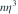
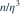
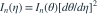
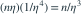

容量 n 的独立样本来自  ，令新参数
，令新参数  。整个样本关于
。整个样本关于  的 Fisher 信息
的 Fisher 信息  为多少？
为多少？
，令新参数 。整个样本关于 的 Fisher 信息 为多少？- A
- B
- C

- D

我已思考，展开答案与解析
正确答案：D
- 以原参数表示，Poisson 单个观测的信息为
 ，所以
，所以  。
。 - 信息在光滑重参数化下按导数平方变换：

。 - 因为 ，代入得到

。
易错提醒信息变换使用旧参数对新参数的导数，方向不能写反。
南审 813 · 2026 · 二·2(1)(a)，PDF第1页
从大题拆分考点并重新编写选项；数值或设问有调整。
查看参考来源